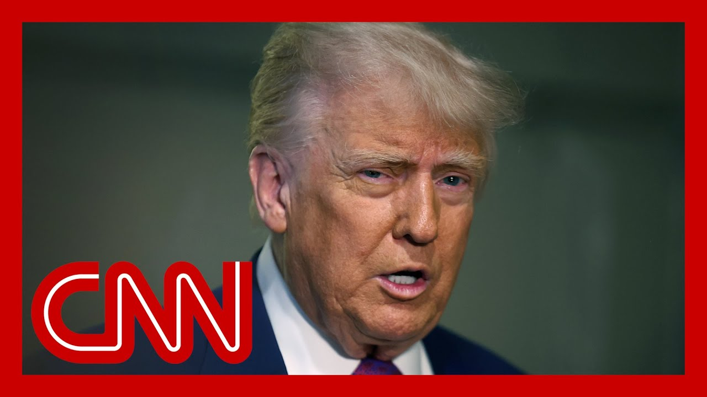

【反转！美国联邦上诉法院暂停了贸易法院阻止特朗普关税的裁决】
Summary: Breaking news: A federal appeals court has paused a ruling that blocked President Trump's tariffs, adding uncertainty to his trade war.
摘要： 突发新闻：联邦上诉法院暂停了一项阻止特朗普总统关税的裁决，为其贸易战增添了不确定性。

⏱️ Estimated Reading Time: 18 min
Breaking news in to CNN, a court decision now injecting even more whiplash into President Donald Trump's trade war.
CNN突发新闻，一项法院裁决给唐纳德·特朗普总统的贸易战带来了更多动荡。
A federal appeals court has paused last night's ruling from the Court of International Trade that blocked President Trump's tariffs.
联邦上诉法院暂停了国际贸易法院昨晚阻止特朗普总统关税的裁决。
Joining us now to discuss is Joe Weisenthal.
现在加入我们讨论的是乔·韦森塔尔。
He's the cohost of Bloomberg's Odd Lots podcast.
他是彭博社《Odd Lots》播客的联合主持人。
Joe, thanks for being with us.
乔，感谢你的参与。
What do we know about this appeals court decision?
关于上诉法院的这一裁决，我们了解什么？
It's just incredible.
这简直令人难以置信。
It's funny because with every headline that comes out about the tariffs, the degree to which people take them, any of them seriously continue to decline.
有趣的是，随着每一条关于关税的新闻出现，人们对它们的重视程度持续下降。
But essentially, you know, the Congress allowed the white House years ago to unilaterally impose tariffs in emergency situations.
但本质上，国会多年前允许白宫在紧急情况下单方面征收关税。
Trump did that.
特朗普这么做了。
An appeals court came out last night, said, this is not what was allowed under that law.
昨晚上诉法院裁定，这并不符合该法律的规定。
This is not a proper separation of powers.
这不是恰当的三权分立。
And now we have another court saying no, actually it's fine.
而现在另一家法院表示，实际上这是可以的。
So the ongoing limbo continues.
因此，持续的僵局仍在继续。
So essentially they're saying it's fine for now, right.
所以本质上他们现在说这是可以的，对吧？
Until this appeal plays out in court.
直到上诉在法庭上得到解决。
Does that mean that, you know, these tariffs are now immediately back on.
这是否意味着这些关税现在立即恢复？
Yeah.
是的。
And apparently even with last night there was some sort of ten day pause.
而且显然昨晚还有某种为期十天的暂停。
So my my read of the situation is that they are back on and then the process will continue to play in court with all of these things, with all of these other issues that you're talking about.
因此，我的理解是它们已经恢复，然后这一过程将在法庭上继续，包括你提到的所有其他问题。
Everyone expects that these will eventually get resolved in the Supreme Court somehow.
所有人都预计这些问题最终会以某种方式在最高法院得到解决。
But I think both in the market and for businesses now, the expectation is that whatever the rules are today, they're probably going to be somewhat different a week or a day or a month from now.
但我认为，无论是市场还是企业，现在的预期是，无论今天的规则是什么，一周、一天或一个月后它们可能会有所不同。
So what does that do for business and what does it do for consumers?
那么这对企业和消费者有什么影响？
Yeah, it's not great.
是的，这不太好。
I mean, look, Trump has already pulled back from the most extreme version of the tariffs that were announced on April 2nd.
我的意思是，特朗普已经放弃了4月2日宣布的最极端版本的关税。
We've seen this recovery in various sentiment surveys that have emerged in the last week.
我们在过去一周的各种情绪调查中看到了这种复苏。
There is this rebound.
出现了这种反弹。
But on the other hand, you send it exactly, you know, in a period of uncertainty that's never good for capital, that's never good for adding headcount, etc..
但另一方面，在不确定的时期，这对资本从来不是好事，对增加员工等也从来不是好事。
And I think we're starting to see that a little bit in the hard data.
我认为我们开始在一些硬数据中看到这一点。
We've seen initial claims continuing jobless claims both creep up.
我们看到初次申请失业救济和持续申请失业救济的人数都在上升。
We've seen factory orders slowed down.
我们看到工厂订单放缓。
So has the economy fallen off a cliff?
那么经济是否跌入悬崖？
No.
没有。
Has the stock market crash recovered?
股市崩盘是否已经恢复？
Yes.
是的。
But at the margin, all of these things have a decelerating effect.
但在边际上，所有这些事情都有减速效应。
Now, fundamentally, the administration is arguing that there is a crisis in international trade, and the president is trying to address that through these tariffs.
现在，从根本上说，政府认为国际贸易存在危机，总统正试图通过这些关税来解决这一问题。
What do you make of that argument?
你对这一论点有何看法？
Because overall, the U.S. economy seems to be doing okay.
因为总体而言，美国经济似乎还不错。
Yeah.
是的。
Yeah, I think that's exactly right.
是的，我认为这完全正确。
I think very few people would look at the current environment and say there is an acute economic crisis, the likes of which Congress would have imagined when it delegated this essentially unilateral fiscal authority to the white House.
我认为很少有人会看当前的环境并说存在国会当初授权白宫这种单方面财政权力时所想象的严重经济危机。
Now people may zoom out and look at the big picture and they might say, okay, there's the declining manufacturing capacity of various key goods happening in the United States.
现在人们可能会放大视野，看看大局，他们可能会说，好吧，美国各种关键商品的制造能力正在下降。
This is a multi-decade story, etc..
这是一个持续数十年的故事，等等。
And I think someone could even make the case that there are conditions with regards to international trade that amount to a very serious issue for the United States.
我认为有人甚至可以说，国际贸易中存在对美国来说非常严重的问题。
But is it the type of crisis in which, other tariffs, such as those applied during the Trump administration, came after it came after an investigative process identifying what were perceived to be unfair trade practices.
但这是否是那种危机，即其他关税，如特朗普政府时期实施的关税，是在调查过程确定被认为是不公平贸易行为之后才实施的？
Is is this the type of crisis that would justify.
这是否是那种可以证明的危机？
No, we can't even go through that process.
不，我们甚至无法完成这一过程。
I think people are skeptical of that.
我认为人们对此持怀疑态度。
It's that type of crisis.
这是那种危机。
And perhaps that's why, the administration was dealt that setback, which has since been reversed in the last nine and then sort of put on hold again after that.
也许这就是为什么政府遭遇了挫折，这一挫折在过去九个月中被逆转，然后又被搁置。
I do wonder, I do wonder as you're sitting back looking at all of this, if you think that the administration has avenues beside the emergency powers to try to gain the leverage that it's looking for, to negotiate some of these trade deals because they they seem to have options.
我确实想知道，当你坐下来看这一切时，你是否认为政府除了紧急权力之外还有其他途径来获得它想要的杠杆，以谈判其中一些贸易协议，因为他们似乎有选择。
I wonder how far they can go.
我想知道他们能走多远。
Well, look, they did tariffs in the initial in the in the initial Trump administration that survived court battles.
好吧，他们在特朗普政府初期实施了关税，这些关税在法庭斗争中幸存下来。
But it was a slightly it was a slower process.
但这是一个稍微缓慢的过程。
There was an investigation that took place.
进行了调查。
It was more about specific areas in which perceived unfair training practices on the part of our partners were argued to have taken place.
更多的是关于我们的合作伙伴被认为存在不公平贸易行为的具体领域。
And I get the impression the courts will give the white House quite a bit of flexibility down that route where you establish that one way or another, whether we're talking about dumping of various high tech things, whether we're talking about, you know, certain things where a country is protecting its agriculture industry at the expense of American farmers, there is a process through which I think the white House can prosecute a trade war in such a way that would would be permitted by the courts.
我的印象是，法院会给白宫相当大的灵活性，通过这种方式，无论我们谈论的是各种高科技产品的倾销，还是某些国家以牺牲美国农民为代价保护其农业产业的事情，我认为白宫可以通过一种法院允许的方式进行贸易战。
Again, all of this could be permitted by the Supreme Court in the end.
再次强调，所有这些最终都可能得到最高法院的允许。
And that's what everyone is wondering about, whether the heavily Republican appointed Supreme Court will side with the white House.
这就是大家都在想的问题，由共和党任命占多数的最高法院是否会站在白宫一边。
I don't think it's that obvious which way the Supreme Court would go on some of these questions, but it's very likely that there is a route via which the white House could, you know, put tariffs on more goods or more countries or more partners, etc., in a way that the courts would be chill with, just not in this way that everybody against the 10% blanket terror of under the guise of an acute emergency.
我不认为最高法院在这些问题上的立场会那么明显，但很可能存在一条途径，白宫可以对更多商品、国家或合作伙伴等征收关税，以一种法院可以接受的方式，而不是以这种所有人都反对的以紧急情况为借口的10%全面关税的方式。
Joe Weisenthal appreciate you navigating these twists and turns with us.
乔·韦森塔尔，感谢你与我们共同应对这些曲折。
Thanks for having me.
谢谢邀请我。
First, we're going to start with CNN's Phil Mattingly and Jeff Zeleny.
首先，我们将从CNN的菲尔·马丁利和杰夫·泽莱尼开始。
Phil, I want to start with you just to take us through the economic implications of what has played out today.
菲尔，我想从你开始，带我们了解今天发生的事情的经济影响。
And if you could especially help us understand this latest ruling, how it interacts with the previous two, and where this all actually stands right now.
如果你能特别帮助我们理解这一最新裁决，它如何与前两项裁决相互作用，以及目前这一切的实际状况。
Casey, how many times over the course of the last couple of months have you and I spoken about kind of the pervasive sense of uncertainty that's led to a level of paralysis throughout markets for business owners, for foreign leaders as well.
凯西，在过去的几个月里，我们有多少次谈到那种普遍的不确定性感，导致市场、企业主和外国领导人陷入某种程度的瘫痪。
Yet the last 21 hours haven't helped on that front.
然而，过去的21小时在这方面并没有帮助。
It's been a slightly discombobulating.
这有点令人困惑。
So I'll do my best to give you a CliffsNotes version of things, which is basically where we stand right now is the cornerstone of President Trump's expansive tariff regime is alive.
因此，我将尽力给你一个简要版本，基本上我们现在的情况是特朗普总统广泛的关税制度的核心仍然存在。
It's alive because of an administrative stay put on by a U.S. circuit court that isn't a ruling on the merits.
它之所以存在，是因为美国巡回法院的一项行政暂缓令，这不是对案件实质的裁决。
What it allows for is both sides to make their arguments about the necessity of an appeal that appeals process, or that process of the stay will play out through a briefing schedule that goes until June 9th.
它允许双方就上诉的必要性提出论点，上诉程序或暂缓程序将通过简报时间表进行，直到6月9日。
We will see kind of where things land from there.
我们将看到事情从那里如何发展。
As you noted, the administration moved extra fast to try and appeal what happened last night, which was essentially a court ruling to strike down the vast majority, really the most sweeping and expansive tariffs that President Trump has rolled out over the course of his first five months.
正如你所指出的，政府行动非常迅速，试图对昨晚发生的事情提出上诉，这本质上是一项法院裁决，推翻了特朗普总统在前五个月中推出的大部分、实际上是最广泛和最全面的关税。
Inside the administration, it was a direct shot to the executive authority.
在政府内部，这是对行政权力的直接打击。
The president has made clear he believes he has, but it also throws a very clear wrench into ongoing bilateral negotiations he's had with 18 allies over the course of the last several months.
总统明确表示他相信自己拥有这种权力，但它也明显破坏了他过去几个月与18个盟友进行的双边谈判。
So where do things stand now?
那么现在的情况如何？
There's a wrinkle here.
这里有一个问题。
There's actually, as you noted, a second judge, a district court judge who earlier today also found that the president didn't have the authority to impose these sweeping tariffs on an emergency basis.
实际上，正如你所指出的，今天早些时候，第二位法官，一位地区法院法官也裁定总统无权在紧急情况下实施这些全面关税。
That ruling, however, applied to just two companies and the administration's ability to charge those two companies.
然而，这一裁决仅适用于两家公司以及政府对这两家公司征收关税的能力。
Those tariffs.
那些关税。
It was not expansive if it was not a nationwide injunction.
它不是全面的，因为它不是全国性的禁令。
The judge also gave 14 days for that ruling to come into place.
法官还给了14天时间让该裁决生效。
That would give the administration time to appeal as they've done with the ruling last night as well.
这将给政府时间提出上诉，就像他们对昨晚的裁决所做的那样。
So we'll have to keep an eye on that one.
因此，我们必须密切关注这一点。
But for now, the most expansive ruling and the biggest threat that we've seen really at all, to the president's tariff regime and his view of his expansive executive authority is frozen for the moment as the administration continues to pursue its urgent efforts to try and keep them in place.
但目前，最广泛的裁决和对总统关税制度及其广泛行政权力观点的最大威胁暂时被冻结，因为政府继续紧急努力试图维持它们。
Yeah.
是的。
For sure.
当然。
All right, so, Jeff Zeleny, help us understand how the white House is taking all of this in.
好吧，那么，杰夫·泽莱尼，帮助我们理解白宫如何看待这一切。
And, of course, President Trump is supportive of the tariffs we showed you.
当然，特朗普总统支持我们向你展示的关税。
You know, why and how he has been throughout his entire political career.
你知道，为什么以及如何贯穿他的整个政治生涯。
However, there are competing forces advising him right now.
然而，现在有相互竞争的力量在向他提供建议。
We've already heard from Peter Navarro on this.
我们已经听到彼得·纳瓦罗对此的看法。
But of course, the markets are really looking to Scott Bezzant as someone that they want guidance on.
但当然，市场真正期待斯科特·贝赞特作为他们想要指导的人。
Can you take us behind the scenes and help us understand how this is playing out?
你能带我们了解幕后情况，帮助我们理解这一切是如何发展的吗？
Well, look, to Phil's point, they're frozen for a moment.
好吧，看，按照菲尔的观点，它们暂时被冻结。
That is the most important thing here because yes, that ruling last night, which really was jarring.
这是这里最重要的事情，因为昨晚的裁决确实令人震惊。
Of all the legal rulings the white House has had to contend with, and there have been a lot of them.
在所有白宫不得不应对的法律裁决中，有很多。
This was the most jarring because it hits directly at the heart of the administration's agenda.
这是最令人震惊的，因为它直接打击了政府议程的核心。
So that for now, is on hold.
因此，目前它被搁置。
But also it's still said the merits have yet to be decided.
但它也表示，案件实质尚未决定。
So that is where this fight is going to play out.
因此，这就是这场斗争将要展开的地方。
If you think about it like this, yes, the president, as you play there, has long believed in the idea of tariffs.
如果你这样想，是的，总统，正如你在那里播放的那样，长期以来一直相信关税的理念。
It has been a consistency, one of the few consistent to policy views.
这是一贯的，少数一贯的政策观点之一。
However, many observers thought at the very beginning of this administration he was kind of doing an end run around this by using the Emergency Powers Act of 1977 to impose these will.
然而，许多观察人士认为，在本届政府初期，他有点通过使用1977年的《紧急权力法》来实施这些关税来绕过这一点。
That is now at issue.
现在这是有争议的。
The court last night, the International Trade Court ruled that he does not have the power.
昨晚的法院，国际贸易法院裁定他没有权力。
The white House does not have the authority under that act.
白宫根据该法案没有权力。
So they also ruled that the white House cannot subvert Congress.
因此，他们还裁定白宫不能颠覆国会。
So those challenges still remain.
因此，这些挑战仍然存在。
So the bottom line now is, for all the huffing and puffing from the white House podium from advisers, this is now a legal case.
因此，现在的底线是，尽管顾问们在白宫讲台上大放厥词，这现在是一个法律案件。
The arguments have to be made in a court of law.
论点必须在法庭上提出。
And yes, this could still end up at the Supreme Court.
是的，这最终可能会提交到最高法院。
It likely will end up The advisers I've talked to just in this a short period of time as we've been digesting this, have said, but the and at the heart of all of this is more than the president's longstanding view on tariffs.
它很可能会结束。在我消化这一点的短时间内，我与之交谈的顾问们说，但这一切的核心不仅仅是总统长期以来对关税的看法。
It's the a method in which he has enacted all of this.
这是他实施这一切的方法。